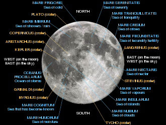

Craters
The other major geologic process that has affected the Moon's surface is impact cratering, with craters formed when asteroids and comets collide with the lunar surface. There are estimated to be roughly 300,000 craters wider than 1 km (0.6 mi) on the Moon's near side alone. The lunar geologic time scale is based on the most prominent impact events, including Nectaris, Imbrium, and Orientale, structures characterized by multiple rings of uplifted material, between hundreds and thousands of kilometers in diameter and associated with a broad apron of ejecta deposits that form a regional stratigraphic horizon. The lack of an atmosphere, weather and recent geological processes mean that many of these craters are well-preserved. Although only a few multi-ring basins have been definitively dated, they are useful for assigning relative ages. Because impact craters accumulate at a nearly constant rate, counting the number of craters per unit area can be used to estimate the age of the surface. The radiometric ages of impact-melted rocks collected during the Apollo missions cluster between 3.8 and 4.1 billion years old: this has been used to propose a Late Heavy Bombardment of impacts.
Blanketed on top of the Moon's crust is a highly comminuted (broken into ever smaller particles) and impact gardened surface layer called regolith, formed by impact processes. The finer regolith, the lunar soil of silicon dioxide glass, has a texture resembling snow and a scent resembling spent gunpowder. The regolith of older surfaces is generally thicker than for younger surfaces: it varies in thickness from 10–20 km (6.2–12.4 mi) in the highlands and 3–5 km (1.9–3.1 mi) in the maria.Beneath the finely comminuted regolith layer is the megaregolith, a layer of highly fractured bedrock many kilometers thick.
Comparison of high-resolution images obtained by the Lunar Reconnaissance Orbiter has shown a contemporary crater-production rate significantly higher than previously estimated. A secondary cratering process caused by distal ejecta is thought to churn the top two centimeters of regolith a hundred times more quickly than previous models suggested – on a timescale of 81,000 years.

Surface
The topography of the Moon has been measured with laser altimetry and stereo image analysis. Its most visible topographic feature is the giant far-side South Pole–Aitken basin, some 2,240 km (1,390 mi) in diameter, the largest crater on the Moon and the second-largest confirmed impact crater in the Solar System. At 13 km (8.1 mi) deep, its floor is the lowest point on the surface of the Moon. The highest elevations of the surface are located directly to the northeast, and it has been suggested might have been thickened by the oblique formation impact of the South Pole–Aitken basin. Other large impact basins, such as Imbrium, Serenitatis, Crisium, Smythii, and Orientale, also possess regionally low elevations and elevated rims. The far side of the lunar surface is on average about 1.9 km (1.2 mi) higher than that of the near side.The discovery of fault scarp cliffs by the Lunar Reconnaissance Orbiter suggest that the Moon has shrunk within the past billion years, by about 90 metres (300 ft). Similar shrinkage features exist on Mercury. A recent study of over 12000 images from the orbiter has observed that Mare Frigoris near the north pole, a vast basin assumed to be geologically dead, has been cracking and shifting. Since the Moon doesn't have tectonic plates, its tectonic activity is slow and cracks develop as it loses heat over the years.

Internal structure
The Moon is a differentiated body. It has a geochemically distinct crust, mantle, and core. The Moon has a solid iron-rich inner core with a radius possibly as small as 240 kilometres (150 mi) and a fluid outer core primarily made of liquid iron with a radius of roughly 300 kilometres (190 mi). Around the core is a partially molten boundary layer with a radius of about 500 kilometres (310 mi). This structure is thought to have developed through the fractional crystallization of a global magma ocean shortly after the Moon's formation 4.5 billion years ago.
Crystallization of this magma ocean would have created a mafic mantle from the precipitation and sinking of the minerals olivine, clinopyroxene, and orthopyroxene; after about three-quarters of magma ocean had crystallised, lower-density plagioclase minerals could form and float into a crust atop.The final liquids to crystallise would have been initially sandwiched between the crust and mantle, with a high abundance of incompatible and heat-producing elements.
Consistent with this perspective, geochemical mapping made from orbit suggests the crust of mostly anorthosite. The Moon rock samples of the flood lavas that erupted onto the surface from partial melting in the mantle confirm the mafic mantle composition, which is more iron-rich than that of Earth. The crust is on average about 50 kilometres (31 mi) thick.
The Moon is the second-densest satellite in the Solar System, after Io. However, the inner core of the Moon is small, with a radius of about 350 kilometres (220 mi) or less, around 20% of the radius of the Moon. Its composition is not well understood, but is probably metallic iron alloyed with a small amount of sulphur and nickel; analyzes of the Moon's time-variable rotation suggest that it is at least partly molten.